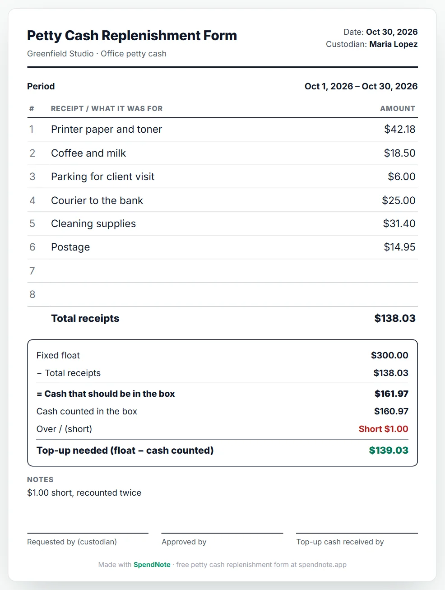
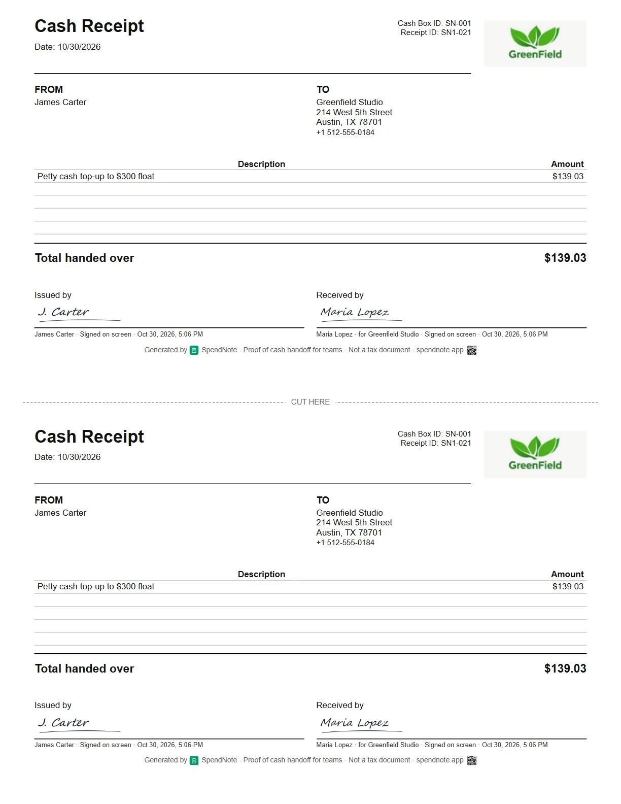
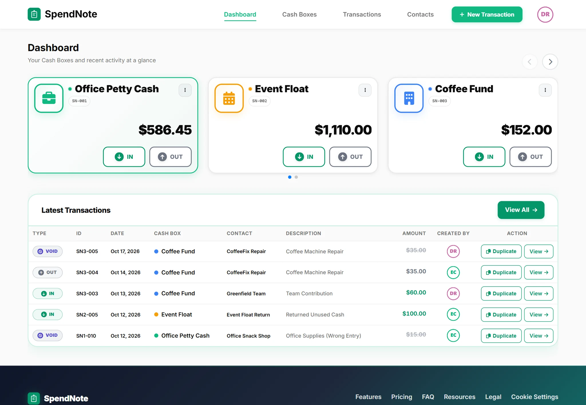

Petty Cash Replenishment Form: How to Replenish Petty Cash
The tin is nearly empty and the receipts are shoved in with what’s left. List the receipts, count the cash, and the form works out the top-up that brings the float back. Print it, sign it, staple the receipts to it.

Fill in a petty cash replenishment form
Enter the fixed float, every receipt since the last top-up and the cash left in the box. Then print it or save it as a PDF. Free, no account, nothing to install.
What Is a Petty Cash Replenishment Form?
A petty cash replenishment form (also called a replenishment request or top-up request) is the sheet that goes with the receipts when the custodian asks for the box to be refilled: what was spent, what is left, and how much cash brings the fund back to its fixed float. Someone other than the custodian approves it, and the receipts are stapled to it as proof.
Most petty cash funds work on a fixed float (the “imprest” method). The box starts at the same amount every time, say $300. Spending takes cash out and puts receipts in, so at any moment cash + receipts = $300. Replenishing simply turns the receipts back into cash.
How to Replenish Petty Cash, Step by Step
Step 1: Count the cash in the box
Count what is physically there before you touch the receipts. If you want it by denomination, use a cash count sheet.
Step 2: List every receipt since the last top-up
One line per receipt or petty cash voucher: what it was for and the amount. A spend without a receipt still goes on the list, with a note saying who spent it and why.
Step 3: Check that cash plus receipts equals the float
Float minus total receipts is what should be in the box. Compare it with the count. If they differ, write the difference down as over or short before going further. When petty cash doesn’t balance covers where the gap usually comes from.
Step 4: Get it approved by someone else
The owner, manager or bookkeeper checks the receipts against the form and signs it. The petty cash custodian should not approve their own top-up.
Step 5: Hand over the top-up cash and both sign
Top up by float minus cash counted. Whoever hands over the cash and the custodian who takes it both sign, so the box is back at the float and nobody has to remember later who put what in.
Petty Cash Replenishment Example
An office keeps a $300 float. At the end of the month the tin holds six receipts and some cash:
| Receipt | Amount |
|---|---|
| Printer paper and toner | $42.18 |
| Coffee and milk | $18.50 |
| Parking for client visit | $6.00 |
| Courier to the bank | $25.00 |
| Cleaning supplies | $31.40 |
| Postage | $14.95 |
| Total receipts | $138.03 |
| Fixed float | $300.00 |
| Cash that should be in the box ($300.00 − $138.03) | $161.97 |
| Cash actually counted | $160.97 |
| Over / (short) | ($1.00) |
| Top-up needed ($300.00 − $160.97) | $139.03 |
The top-up is $139.03, not the $138.03 on the receipts. If you only add back the receipts total, the missing dollar stays hidden in the box, and next month the count is off again. Topping up by float minus cash counted puts the box back at exactly $300, and the form shows the $1.00 shortage in plain sight. That is also the answer to “how do I replenish the float once the petty cash is spent”: count first, then fill the gap to the float.
When to Replenish Petty Cash
Most teams replenish when the box drops below 20–30% of the float, or on a fixed day (weekly, every two weeks, month end). Pick one and stick to it. If the box keeps running dry before the top-up day, or most of the float is still there every time, the float is the wrong size: see how much petty cash to keep.
What a Replenishment Form Should Include
- Fund name, date and custodian — which box, and who is responsible for it
- Period covered — from the last top-up to today
- Every receipt or voucher — what it was for and the amount
- Total receipts
- Fixed float, cash counted and over / short
- Top-up amount — float minus cash counted
- Three signatures — requested by (custodian), approved by, and top-up cash received by
The free form above has all of these. Leave it empty and print it if you would rather fill it in by hand.
The Request Asks for the Cash. The Receipt Proves It Arrived.
The replenishment form is the request. When the cash is actually handed over, from the owner, the bookkeeper or the bank run, that handover needs its own record too: how much, from whom, to whom, and when.
In SpendNote the top-up is logged as cash in to the cash box. Sign on screen at handoff, or print and sign on paper. Both people get a receipt, and the cash box balance is back at the float.

Skip the Month-End Pile of Receipts
“At the end of the month, cross checking all of this is a major pain and more than not, not everything adds up.”— a hostel manager, asking other owners how they handle petty cash
A paper form works, but someone still has to dig through the tin and add it up. If every cash out is logged in SpendNote when it happens, with a receipt, there is nothing to dig through:
- The running balance shows how much is left in each cash box
- The list of cash outs since the last top-up is already there, with who, what and when
- A PDF report of that period goes to whoever approves the top-up
- The top-up itself is one cash in, signed by both people

Let the Next Top-Up Add Itself Up
Log each cash out with a receipt as it happens. At top-up time the total is already there, and the handover is signed in seconds. 14 days free, no credit card.
Start my free trialOther Cash Events, Other Receipts
This page is about topping up the petty cash float. If you need a receipt for a different cash event:
- Someone paid you in cash and you need to give them a receipt → see proof of cash payment.
- You’re giving an employee a cash advance for an expense → see employee cash advance receipt.
- An employee paid out of pocket and you’re paying them back → see office expense reimbursement form.
- You’re handing the cash box itself to another person → see cash handoff receipt.
Important: The replenishment form and SpendNote are internal cash records. They are not an accounting journal entry, a bank reconciliation or a tax document. Your bookkeeper or accounting system still records the replenishment in the books.
Frequently Asked Questions
Is there a free petty cash replenishment form I can print?
Yes. The replenishment form on this page is free and needs no sign-up. Enter the float, the receipts and the cash counted; it totals the receipts, shows any over or short and works out the top-up. Print it or save a PDF, or print it blank and fill it in by hand.
How do you calculate the petty cash replenishment amount?
Top up by the fixed float minus the cash counted in the box. If everything balances, that equals the total of the receipts. If cash is missing, the top-up is bigger than the receipts, and the difference is the shortage, which should be written on the form, not quietly covered.
Who approves a petty cash replenishment?
Someone other than the custodian, usually the owner, a manager or the bookkeeper. They check the receipts against the form, sign it, and then the cash is handed over.
What documents are needed to replenish petty cash?
The replenishment form, every receipt or voucher since the last top-up, and the cash count. The form shows the total spent, the cash left, any over or short, and the approval signature.
When should you replenish petty cash?
When the box drops below a set level, typically 20–30% of the float, or on a fixed schedule such as every week or at month end. The point is never to let it run empty.
What if the receipts and the cash don’t add up to the float?
Recount the cash, then look for receipts that weren’t put in the tin or spends nobody wrote down. Whatever is still missing goes on the form as short (or over). Top up to the float anyway, so the next period starts clean.
Try everything. Pay nothing for 14 days.
Then, if you love it
- Unlimited receipts, 2 cash boxes
- Sign on screen or on paper
- Your logo on every receipt
- Print, PDF & CSV export
- Daily cash report with cash count
Every cash handoff, recorded and signed.
Set up in two minutes. First receipt in thirty seconds. Every entry saved and searchable.
Start my free trial